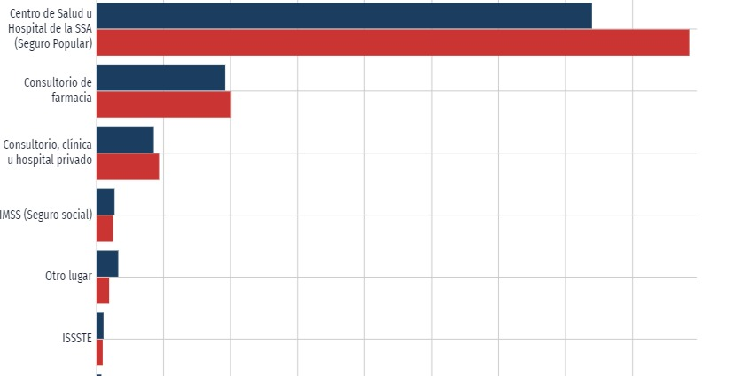

-
VIVIENDA
En 2023, la mayoría de las viviendas particulares habitadas por grandes familias de 7 u 8 integrantes, 25.5% tienes solo 2 habitaciones y el 12.5% cuenta con 3. el 90% de estas viviendas tienen paredes de madera y carton, sus techos son de lamina y en algunos casos se les filtra el agua ademas de que la mayoria tiene piso 100% de tierra. Solo el 53.78% de las viviendas tienen suministro de agua potable, el 0.27% tiene acceso a Internet, y el 0% de las viviendas dispone de lavadora. asi mismo el 0% cuenta con una estufa con gas LP.
-
SEQUIA
Marzo, abril y mayo son los meses más complicados para la industria ganadera en el estado de Puebla, pues se enfrenta a la sequía, uno de los fenómenos ambientales que genera falta de agua para darle de beber a los animales, encarecimiento del alimento, pérdidas económicas, la muerte de las cabezas de ganado y problemas con las siembras.
-
ECONOMIA
El 42.70% de la población están económicamente activos, laborando en el campo o en algun oficio. y de estos, el 48.44% no obtiene los recursos suficientes para cubrir las necesidades basicas de su familias.
-
EMPLEO
En el tercer trimestre de 2022, la tasa de participación laboral en Puebla fue 59.2%, lo que implicó una disminución de 1.29 puntos porcentuales respecto al trimestre anterior (60.5%).
-

SALUD
En Jalpan, las opciones de atención de salud más utilizadas en 2020 fueron Centro de Salud u Hospital de la SSA (Seguro Popular) (8.12k), Consultorio de farmacia (1.96k) y Consultorio, clínica u hospital privado (893).